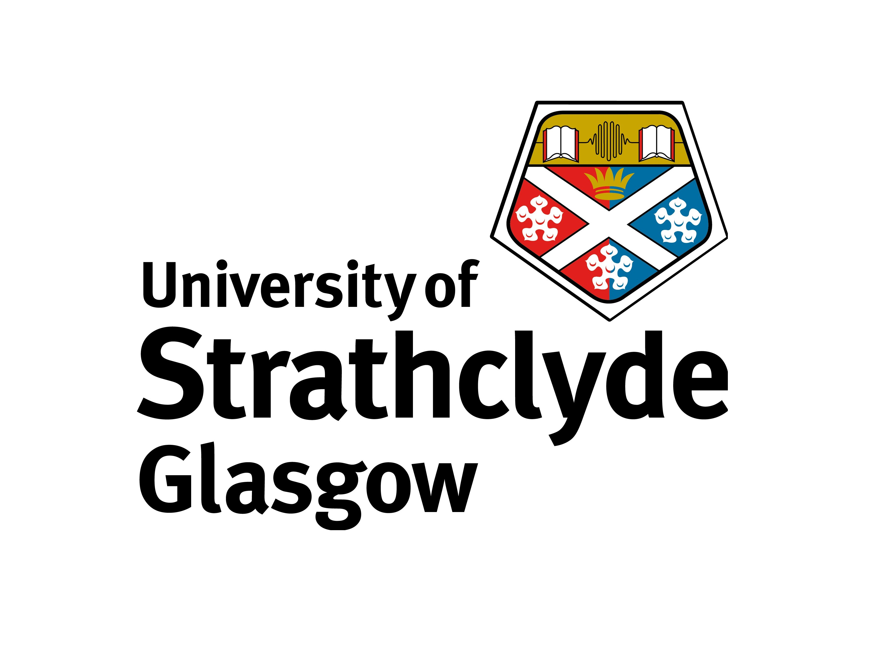
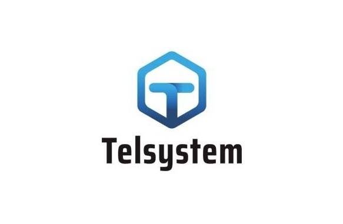

Last Mile Area Manager II

Outbound Area Manager I
Inbound Area Manager I
Logistic Scheduler
MSc in Supply Chain & Logistics Management

Supply Chain Consultant

BEng Industrial Management Engineering